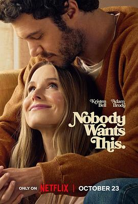

6.8
天作不合的我们 第二季
Nobody Wants This Season 2
2025
美国
评分 6.8
导演:
艾琳·福斯特 (Erin Foster)
演员:
克里斯汀·贝尔 (Kristen Bell) / 亚当·布罗迪 (Adam Brody) / 贾斯汀·卢佩 (Justine Lupe) / 蒂莫西·西蒙斯 (Timothy Simons) / 杰姬·托恩 (Jackie Tohn) / 阿里安·穆阿耶德 (Arian Moayed) / 莉顿·梅斯特 (Leighton Meester)
类型:
喜剧,爱情
剧情简介
在上一季里，播客主持人乔安（克里斯汀·贝尔 饰）与犹太拉比诺亚（亚当·布罗迪 饰）经历了激情而又充满冲突的相遇，两人终于走到了一起。新一季中，他们进入了“你我”模式——不再只是暧昧，而是真正开始共同生活。这意味着，两人要面对的不再是初见的心跳，而是日常里的磨合、习惯的冲突和家庭的干预。 乔安继续主持她大胆的情爱播客，而诺亚则试图在信仰与恋情之间找到平衡。乔安努力保有自己自由不羁的个性，却发现诺亚的世界里充满了传统与责任——当他问：“你愿意为了我改变吗？”她开始犹豫。镜头中，乔安在录音棚里微笑，又在家中灯光暗淡的厨房里默默流泪；诺亚在教堂前祈祷，也在和乔安讨论是否接受她的过去。 与此同时，两人的家人和朋友也纷纷登场，带来新的挑战。乔安的妹妹摩根（贾斯汀·卢佩 饰）面临职场瓶颈，诺亚的弟弟莎沙（蒂莫西·西蒙斯 饰）则在旁窥探这段关系的真实底色。传统与现代、信仰与自由、承诺与自我，在轻快的笑声中暗藏较量。 整部剧集在浪漫喜剧的外表下，探讨了“当爱变成日常”之后，我们是否还能保有最初的自己。乔安和诺亚并不只是寻找“互补”，而是在问：当我们决定在一起，会不会失去那个爱上对方的自己？如果你喜欢贴近日常、却又不失温度与笑点的爱情喜剧，这一季会让你看到“约会之后”的人生。